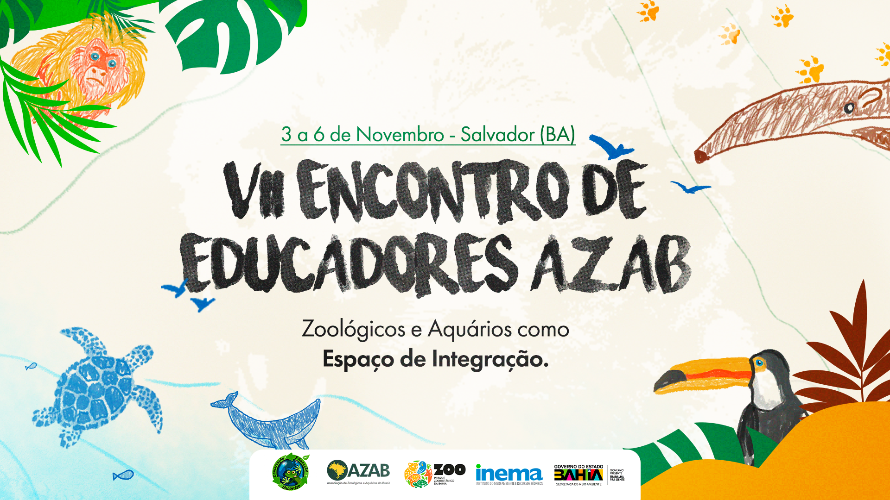

VII Encontro de Educadores AZAB
“Zoológicos e Aquários como espaços de integração” · 03 a 06 de novembro de 2025 · Salvador (BA)

Educadores de todo o país reunidos na Bahia
A Associação de Zoológicos e Aquários do Brasil (AZAB) convida seus associados e profissionais de todo o país para participarem do VII Encontro de Educadores, que será realizado de 03 a 06 de novembro de 2025, no Parque Zoobotânico da Bahia, em Salvador (BA).
A Associação de Zoológicos e Aquários do Brasil (AZAB) convida seus associados e profissionais de todo o país para participarem do VII Encontro de Educadores, que será realizado de 03 a 06 de novembro de 2025, no Parque Zoobotânico da Bahia, em Salvador (BA).
Com o tema “Zoológicos e Aquários como espaços de integração”, o evento reunirá educadores ambientais, comunicadores e especialistas para compartilhar experiências, debater estratégias e fortalecer a educação como ferramenta essencial para a conservação da biodiversidade.
A programação contará com palestras, mesas-redondas, apresentações institucionais e visitas técnicas, abordando temas de grande relevância para o campo da educação ambiental:
- Educação para democracia e diversidade;
- Conexão entre comunicação e educação para conservação;
- Inclusão e acessibilidade em práticas educativas;
- Experiências de conservação marinha e terrestre;
- Centros interpretativos e ações comunitárias;
- Sustentabilidade e integração regional.
Sobre o evento
O VII Encontro de Educadores de Zoológicos e Aquários é uma oportunidade única para fortalecer redes de cooperação e valorizar o papel dos zoológicos e aquários como espaços de diálogo, aprendizado e transformação social.
INSCRIÇÕES (40 vagas)
LOTE 1 – 15/08 a 15/09 • Associados institucionais AZAB têm direito a 1 inscrição cortesia por instituição; • R$ 55,00 para associados (a partir do segundo educador inscrito).
LOTE 2 – 16/09 a 20/10 • R$ 75,00 para associados (a partir do segundo educador inscrito); • R$ 110,00 para não-associados (participantes externos, conforme disponibilidade de vagas).
- LOTE 1 – 15/08 a 15/09
- Associados institucionais AZAB têm direito a 1 inscrição cortesia por instituição;
- R$ 55,00 para associados (a partir do segundo educador inscrito).
- LOTE 2 – 16/09 a 20/10
- R$ 75,00 para associados (a partir do segundo educador inscrito);
- R$ 110,00 para não-associados (participantes externos, conforme disponibilidade de vagas).
Educação para a conservação
Conheça o Comitê de Educação Ambiental e as campanhas nacionais da AZAB.